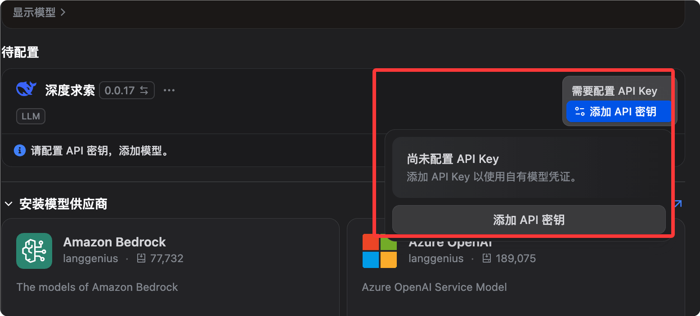
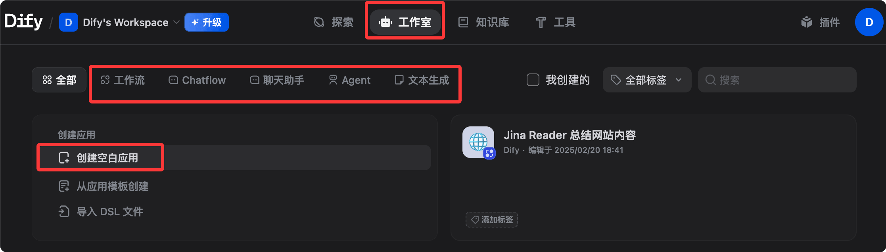
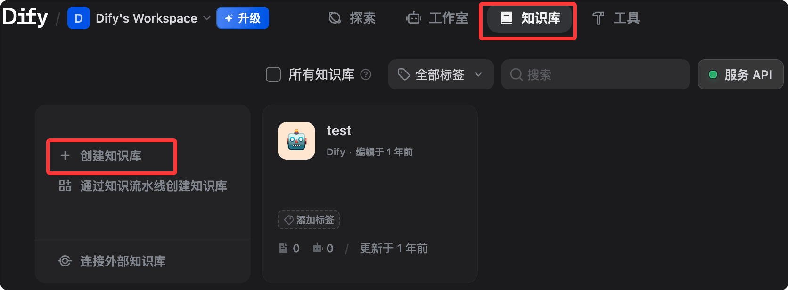

Dify入門チュートリアル
Dify（Do It For You）は、現在最も人気のあるオープンソースLLMアプリ開発プラットフォームであり、大規模言語モデル（LLM）を搭載した生成AIアプリの構築に特化して設計されています。
Difyは、AIワークフローオーケストレーション、RAGナレッジベース、Agentフレームワーク、モデル管理、可観測性を1つのビジュアルプラットフォームに統合し、LLMインフラをゼロから構築することなく、プロトタイプから本番環境へ迅速に移行できます。
Difyは、RAGパイプライン、AIワークフロー、可観測性ツール、モデル管理を統合することで、AIアプリケーションの作成プロセスを簡素化します。
LangChainが「AIアプリの部品工場（柔軟だが大量の手書きコードが必要）なら、Difyは「AIアプリのビジュアルIDE」——コンポーネントがすべて揃っており、ドラッグ＆ドロップで線を結ぶだけで実行できます。

他のツールとの比較
以下は、DifyとLangChain、n8nを主要な観点で比較したものです。
| 観点 | Dify | LangChain | n8n |
|---|---|---|---|
| 主なユーザー | 開発者 + プロダクトマネージャー | 開発者 | 運用/自動化 |
| プログラミング要件 | ローコード / ノーコード | Python/JSの記述が必要 | ローコード |
| RAG内蔵 | 完全内蔵 | 手動での組み立てが必要 | 限定的 |
| Agentフレームワーク | 内蔵 | 内蔵 | 限定的 |
| 可観測性 | 内蔵 | サードパーティ製が必要 | 限定的 |
| セルフホスティング | 完全サポート | サポート | サポート |
| ライセンス | Apache 2.0 | MIT | Fair-code |
Difyの直感的なビジュアルオーケストレーションスタジオは、機能的なAIアプリを迅速に構築する必要があるスタートアップや企業にとって理想的な選択肢です。
LangChainは、カスタム統合と開発者の深い関与を必要とするエンタープライズ級の複雑なアプリケーションに適しています。
Difyを利用しているのは誰か？
バイオメディカルから自動車業界まで、Difyはさまざまな企業に信頼性の高いソリューションを提供しています。
Volvo Carsは、AIフロンティア戦略ナビゲーションにおいてDifyを使用してアイデアを迅速に検証しています。
ユーザーがDifyを高く評価する点は、AI Agentの開発を民主化し、強力なAI/ML機能をノーコードプラットフォームに組み合わせられることです。
中核概念
操作を始める前に、Difyの基本概念を理解しておきましょう。
| 概念 | 説明 |
|---|---|
| アプリ（App） | Difyにおける基本的なデプロイ単位です。各アプリは独立したAI機能に対応し、独自のSystem Prompt、関連するナレッジベース、ツール設定、APIキーを持ちます。 |
| ナレッジベース（Knowledge Base） | ナレッジベースは、AIアプリに統合できる独自のデータ集合です。LLMが回答する際に、専有データを追加の真実の情報源として利用できるようにし、回答の正確性・関連性を高め、幻覚（ハルシネーション）を起こしにくくします。 |
| RAG（検索拡張生成） | ユーザーが質問すると、システムはまずナレッジベースから最も関連性の高い情報を検索し（Retrieval）、その検索結果をユーザーの元の質問と組み合わせてLLMに送信します（Augmented）。LLMはこのコンテキストに基づいて、より正確な回答を生成します（Generation）。 |
| Workflow（ワークフロー） | ビジュアルキャンバス上で強力なAIワークフローを構築・テストできます。ノードと接続をドラッグ＆ドロップして、多段階のAI処理ロジックを定義します。 |
| Agent（エージェント） | LLMのFunction CallingまたはReActに基づいてAgentを定義し、プリビルトまたはカスタムツールを追加できます。DifyはAI Agent向けに、Google Search、DALL E、Stable Diffusion、WolframAlphaなど50以上の組み込みツールを提供しています。 |
| ノード（Node） | ワークフローの基本単位です。各ノードは、LLM推論、ナレッジ検索、コード実行、HTTPリクエスト、条件分岐などの具体的な操作を1つ実行します。 |
インストールと起動
4つのインストール方法。ゼロ秒で始められる方法から高可用性クラスターデプロイまで。
方法1：Dify Cloud（最速、0秒で始められる）
アクセスして、アカウントを登録するとすぐに使用できます。cloud.dify.ai無料のSandboxプランには、月200件のメッセージと5個のアプリが含まれており、環境設定は一切不要です。
クイック体験、個人プロジェクト、プロトタイプのテストに適しています。
方法2：Docker Compose セルフホスティング（本番環境での使用を推奨）

方法2：Docker Compose セルフホスティング（本番環境での使用を推奨）
システム要件
リソース
| 最小要件 | 推奨構成 | 2コア |
|---|---|---|
| CPU | 4コア | メモリ |
| ディスク | 4 GB | 8 GB |
| 最新版 | 20 GB | 50 GB+ |
| Docker | Engine 20.10+ | 最新版 |
| Docker Compose | v2.2+ | 最新版 |
インストール手順
ステップ1: リポジトリをクローンする
Difyリポジトリをローカルにクローンします:
git clone https://github.com/langgenius/dify.git cd dify
ステップ2: docker ディレクトリに移動し、環境設定をコピーする
cd docker # 从模板复制环境配置文件 cp .env.example .env
ステップ3（重要）: SECRET_KEY を設定する
v1.14.1 以降、Docker デプロイは公開されたデフォルトキーに依存しなくなりました。SECRET_KEY が空の場合、API は実行時キーを自動生成して永続化します。.env ファイルに明示的に設定することをお勧めします。
# 生成一个安全的随机密钥 openssl rand -base64 42
.env ファイルを編集し、SECRET_KEY を見つけて、上で生成したランダムな文字列に設定します：
SECRET_KEY=your-very-long-random-secret-key-here
ステップ4: サービスを起動する
# 启动所有 Dify 服务（首次会拉取镜像，约需 3-10 分钟） docker compose up -d
ステップ5: アクセスして初期化する
ブラウザで http://localhost/install にアクセスし、管理者アカウントの登録を完了します。
ステップ6: サービスの状態を確認する
# 查看所有容器状态，全部为 healthy 即表示运行正常 docker compose ps
すべてのコンテナ（api、worker、web、db、redis、weaviate、nginx など）の状態が healthy であれば、正常に動作しています。
停止と再起動
# 停止所有服务（数据保留在 Docker volumes 中） docker compose down # 重新启动所有服务 docker compose up -d
新バージョンへのアップグレード
# 进入 docker 目录 cd dify/docker # 拉取最新代码 git pull origin main # 拉取新镜像 docker compose pull # 重新启动 docker compose up -d
データは Docker ボリュームに永続化されるため、更新しても既存のアプリケーション、ナレッジベース、会話履歴には影響しません。メジャーバージョンアップグレードの前に PostgreSQL データベースのバックアップを推奨します。
方法3：AWS Marketplace ワンクリックデプロイ
AWS で運用するスタートアップや中小企業向けに、AWS Marketplace の Dify Premium を使用すると、自分の AWS VPC にワンクリックでデプロイでき、カスタムロゴやブランドにも対応しています。
方法4：Kubernetes デプロイ（高可用性）
高可用性構成が必要なシナリオでは、コミュニティが Helm Charts と YAML ファイルを提供しており、Dify を Kubernetes クラスターにデプロイできます。
# 添加 Dify Helm 仓库 helm repo add dify https://langgenius.github.io/dify-helm # 使用自定义 values.yaml 安装 helm install dify dify/dify -f values.yaml
モデルプロバイダーの設定
インストール完了後、最初のステップは AI モデルを接続することです。
操作手順
Dify にログインしたら、右上のアバターをクリックし、Settings（設定）に入り、Model Provider（モデルプロバイダー）を選択します。

例えば、DeepSeek というモデルプロバイダーをインストールして、API キーを設定できます：

主要プロバイダーの設定
Anthropic（Claude シリーズ）：
Provider: Anthropic API Key: sk-ant-xxxxxxxx（从 console.anthropic.com 获取） 推荐模型：claude-sonnet-4-6（综合性能最佳）
OpenAI：
Provider: OpenAI API Key: sk-xxxxxxxx（从 platform.openai.com 获取） 推荐模型：gpt-4o（性价比高）
Google（Gemini シリーズ）：
Provider: Google API Key: xxxxxxxx（从 aistudio.google.com 获取） 推荐模型：gemini-2.0-flash（速度快，适合大量请求）
OpenRouter（1つのキーで 300+ モデルにアクセス）：
Provider: OpenRouter API Key: sk-or-xxxxxxxx（从 openrouter.ai 获取） Base URL: https://openrouter.ai/api/v1
ローカルモデル（Ollama）：
Provider: Ollama Base URL: http://host.docker.internal:11434 # Docker 内访问宿主机 （先在宿主机运行：ollama pull llama3.3）
Embeddingモデルの設定（ナレッジベースに必須）
ナレッジベースのベクトル化には Embedding モデルが必要です。以下は推奨オプションです：
| モデル | 特徴 | 適用シーン |
|---|---|---|
| OpenAI text-embedding-3-small | 低コストで効果が高い | 一般的なシーン |
| Zhipu AI embedding-3 | 中国語サポートが優れている | 中国語中心のコンテンツ |
| ローカル nomic-embed-text（Ollama） | 完全オフライン | データセキュリティ要件が高い |
モデルの利用可否を確認
Settings に戻り、設定済みのプロバイダーを見つけ、モデル名の横にある Test ボタンをクリックします。緑のチェックマークが表示されれば設定成功です。
5つのアプリタイプの詳細
Dify のホームページで Create App（アプリ作成）をクリックすると、5つのタイプが表示され、それぞれ異なる使用シーンに対応しています。

空白アプリの作成をクリックすると、5つのタイプのアプリを確認できます：

1. Chatbot（チャットアシスタント）
標準的なマルチターン対話アプリで、永続的なセッション記憶を持ちます。
| 属性 | 説明 |
|---|---|
| 適したシーン | カスタマーサポートボット、パーソナルアシスタント、FAQ 応答 |
| 主な特徴 | 対話記憶の内蔵（記憶戦略の設定可能）、ナレッジベースの追加可能（RAG 有効化）、ストリーミング出力のサポート、ワンクリックでWebページ埋め込みコードとして公開 |
2. Text Generator（テキスト生成器）
1回の入力から1回の出力までで、会話履歴は保持されません。
| 属性 | 説明 |
|---|---|
| 適したシーン | 文章のリライト、要約生成、SEO コピー、メールの下書き |
| 主な特徴 | 構造が明確（入力フォーム + 出力テキスト）、バッチ処理に適している、変数プレースホルダーをサポート（例：{{product_name}}） |
3. Agent（エージェント）
ツールを能動的に呼び出し、多段階タスクを自律的に計画・実行できる AI です。
| 属性 | 説明 |
|---|---|
| 適したシーン | データの照会と分析、検索と要約、コード実行 |
| 主な特徴 | Function Calling と ReAct の2つの推論モードをサポート、50以上のツールを内蔵（検索、画像生成、コードインタープリターなど）、カスタム API ツールをサポート、ツール呼び出しプロセスがユーザーに可視 |
4. Chatflow（対話フロー）
Workflow を基盤にマルチターン対話機能を追加し、フローオーケストレーションとセッションコンテキストの両方を備えています。
| 属性 | 説明 |
|---|---|
| 適したシーン | 複雑なカスタマーサポートフロー、多段階の判断が必要なチャットボット |
| 主な特徴 | Workflow のノードオーケストレーション能力を持ちながら、対話のマルチターン記憶を保持し、対話中に自動化フローをトリガーできます |
5. Workflow（ワークフロー）
純粋に自動化された多段階処理フローで、対話インターフェースはなく、API トリガーまたは手動実行で動作します。
| 属性 | 説明 |
|---|---|
| 適したシーン | バッチデータ処理、スケジュール自動化タスク、バックエンド AI 処理パイプライン |
| 主な特徴 | ビジュアルキャンバス上で AI ワークフローを構築・テスト可能、並列分岐・ループ・条件分岐をサポート、Human-in-the-Loop（Human Input ノード）をサポート、出力結果を他のシステムと連携可能 |
選択ガイド
ニーズに応じてどのアプリタイプを使うかを素早く決定します：
需要多轮对话？
├─ 是 → 需要复杂流程逻辑？
│ ├─ 是 → Chatflow
│ └─ 否 → Chatbot 或 Agent（需要工具调用时选 Agent）
└─ 否 → 单次输入输出？
├─ 是 → Text Generator
└─ 需要多步骤自动化 → Workflow
ナレッジベース（RAG）：AIにあなたのプライベートデータを回答させる
ナレッジベースは Dify の最も強力な機能の1つであり、ほとんどの企業アプリケーションの中核です。
ナレッジベースの作成
- ナビゲーションバーで Knowledge（ナレッジベース）を選択し、Create Knowledge（ナレッジベース作成）をクリックします
- ナレッジベースに名前を付けます（例：「製品マニュアル」や「社内ポリシー文書」）
- 作成方法を選択

方法1: ファイルのアップロード（最も一般的）
Dify は PDF、Word（.docx）、Markdown（.md）、プレーンテキスト（.txt）、CSV、HTML 形式のファイルを受け付けます。
Markdown またはプレーンテキストを推奨します。これらは最も確実に解析できます。
レイアウトが複雑な PDF やスキャン版の PDF は前処理が必要な場合があります。まず OCR ツールでテキストを抽出してからアップロードすることをお勧めします。
方法2: Knowledge Pipeline（エンタープライズ向け）
Knowledge Pipeline は、ドキュメント取り込み処理に特化したビジュアルなノード型オーケストレーションシステムです。
これは従来の RAG の3つの課題を解決します：分散したデータソース、解析プロセス中の情報損失（図表や数式が破棄される）、そしてブラックボックス処理プロセス（失敗原因の診断が難しい）です。
方法3: 外部ナレッジベース API
API 経由で既存の外部ナレッジベースを同期でき、データ移行は不要です。
ドキュメント分割戦略
アップロード後、Dify は自動的にテキスト分割（チャンキング）を行います。主要パラメータの説明は以下の通りです：
| パラメータ | 説明 | 推奨値 |
|---|---|---|
| チャンクサイズ | 各チャンクのトークン数 | 500-1000（中国語） |
| チャンクオーバーラップ | 隣接するチャンクのオーバーラップトークン数 | 50-100 |
| 区切り文字 | 何で分割するか（段落/文） | 段落 |
中国語コンテンツでは、チャンクサイズを約500トークンに設定することをお勧めします。長すぎると検索の精度が低下し、短すぎるとコンテキストが失われます。
インデックスモード
| モード | 説明 | コスト |
|---|---|---|
| 高品質（デフォルト） | Embedding モデルを使用してベクトルを生成し、最も効果的 | Embedding API を消費 |
| エコノミーモード | 転置インデックス（キーワードマッチング）、Embedding 不要 | 無料 |
検索設定
ナレッジベースに入り、Settings を選択して検索パラメータを設定します：
| 検索方法 | 説明 | 適用シーン |
|---|---|---|
| ベクトル検索 | セマンティック類似度マッチング | 意味的に関連するクエリ |
| 全文検索 | キーワードマッチング | 正確な語彙クエリ |
| ハイブリッド検索（推奨） | 両方を組み合わせ、リランキングモデルで精度を向上 | 一般的なシーン |
類似度しきい値は0.5〜0.7に設定することを推奨します。
類似度しきい値が高すぎると結果が返されず、低すぎると無関係な内容が返されます。0.6からテストし、効果に応じて微調整することをお勧めします。
検索効果のテスト
ナレッジベースで「Retrieval Testing（検索テスト）」をクリックし、テスト質問を入力して、返されたChunkを直接確認し、検索品質を検証します。実際に会話を開始する必要はありません。
ナレッジベースをアプリに連携する
アプリ編集ページで「Context（コンテキスト）」を選択し、「Add（追加）」をクリックして、作成済みのナレッジベースを選択して保存します。
連携後、このアプリの各会話はナレッジベースを先に検索してから回答します。
Workflow ワークフロー：多段階タスクをビジュアルに編成
ノードと接続線をドラッグ＆ドロップして、多段階のAI処理ロジックを定義します。
Workflowエディターを開く
アプリ作成時にWorkflowを選択するか、既存のWorkflowアプリで「Edit（編集）」をクリックしてキャンバスに入ります。

主要ノードタイプ
以下はWorkflowエディターで最も一般的に使われるノードとその機能です：
| ノード | 機能 | 典型的な用途 |
|---|---|---|
| Start | フロー入口、入力変数を定義 | ユーザー入力または外部パラメータを受け取る |
| LLM | 言語モデルを呼び出す | テキスト生成、分析、翻訳 |
| Knowledge Retrieval | ナレッジベースから検索 | RAGシナリオ |
| IF/ELSE | 条件分岐 | コンテンツに応じて異なる処理パスにルーティング |
| Code | PythonまたはJSコードを実行 | データ変換、形式処理、計算 |
| HTTP Request | 外部APIを呼び出す | データベースの照会、通知の送信 |
| Template | 変数テンプレートのレンダリング | 複数ノードの出力を組み合わせる |
| Variable Assigner | 変数の設定/更新 | ノード間でデータを渡す |
| Iteration | リストをループ処理 | 複数データを一括処理 |
| Agent | 組み込みAgentノード | ワークフロー内の特定のステップに自律推論機能を持たせる |
| Human Input | 一時停止して手動レビューを待つ | 人と機械の協働における重要な決定ポイント |
| End | フロー出口、出力を定義 | 最終結果を返す |

ノード間の変数受け渡し
各ノードの出力は後続ノードで参照でき、構文は「{{ノード名.出力変数名}}」です。
以下は典型的なRAG Q&Aワークフローの変数受け渡しの例です：
Start 节点输出 user_query
↓
Knowledge Retrieval 节点：
输入：{{Start.user_query}}
输出：result（检索结果）
↓
LLM 节点：
System Prompt：你是一个客服助理，根据以下资料回答问题
User：用户问题：{{Start.user_query}}
参考资料：{{Knowledge Retrieval.result}}
↓
End 节点：
返回：{{LLM.text}}
Human Input ノード（HITL）
Human Inputノードは重要なアップデートであり、ワークフローが重要な決定ポイントで実行を一時停止できるようにします。
このノードは、人間が変数をレビューおよび修正（ドラフトの編集やデータの修正など）するためのUIを生成し、カスタムボタン（「承認」「拒否」「エスカレーション」など）に基づいて後続のパスを決定します。
これにより、従来のワークフローにおける「完全自動化か完全手動か」という二分法のジレンマが解決され、高リスクなシナリオ（契約審査、医療アドバイス、金融判断）でも自動化AIを利用できるようになります。
ワークフローのデバッグ
キャンバス右上の「Run（実行）」をクリックし、テストパラメータを入力して、各ノードの入出力と所要時間を確認します。
ノードの横に緑（成功）または赤（失敗）のマークが表示され、クリックすると詳細な実行ログを確認できます。
実践シナリオ1：社内ナレッジQ&Aボット
Difyを使って、社内文書の質問に正確に回答し、回答に出典を引用するチャットボットを構築します。
業務背景
会社には大量の社内文書（HRポリシー、製品マニュアル、技術Wiki）があり、従業員は情報を探すことがよくありますが、文書が分散しており検索が困難です。
ステップ1：ナレッジベースの準備
- 文書を整理：HRポリシー（PDF）、製品マニュアル（Word）、技術Wiki（Markdown）をエクスポートしてバックアップ
- Knowledgeで「Create Knowledge」を選択し、「会社内部ナレッジベース」と命名
- ファイルをアップロードし、高品質インデックスモードを選択
- ベクトル化が完了するのを待つ（進捗バーが表示されます）
文書品質の最適化テクニック：無関係な情報、ヘッダー・フッター、特殊文字を削除します。明確な見出しと短い段落を使用します。1つの文書に複数の異なるトピックが含まれる場合は、独立したファイルに分割することを検討します。
ステップ2：Chatbotアプリの作成
- 「Create App」をクリックし、Chatbotを選択して「内部アシスタント」と命名
- モデルを選択（推奨：Claude Sonnet 4.6 または GPT-4o）
- System Promptを作成

あなたは会社内部の知識アシスタントであり、社員が内部文書情報を探すのを専門にサポートします。 行動規範： - 提供されたナレッジベースの内容にのみ基づいて回答し、情報を捏造しない - 回答時には出典のドキュメント名を明記する - ナレッジベースに関連情報がない場合は、「ドキュメントに関連情報が見つかりませんでした」と直接伝え、担当部門への連絡を提案する - 簡潔で専門的な言葉遣いを使用する - 会社機密以外の話題については議論しない
- Contextで「Add」をクリックし、「会社内部ナレッジベース」を選択
- 検索パラメータを設定：ハイブリッド検索、類似度しきい値0.6、Top 5チャンクを返す
ステップ3：テストとチューニング
実際の質問でテストします。以下は推奨テストケースです：
测试问题示例： "年假怎么申请？" → 应该从 HR 政策文档返回正确步骤 "产品 A 的定价是多少？" → 应该从产品手册返回准确价格 "如何配置 VPN？" → 应该从技术 Wiki 返回步骤 "CEO 是谁？" → 如果文档中没有，应该诚实说不知道
一般的なチューニング操作
| 問題 | 解決策 |
|---|---|
| 回答が不正確 | 類似度しきい値を下げ（例：0.5）、返されるChunk数を増やす |
| 回答が無関係 | しきい値を上げ（例：0.7）、文書のチャンク分割が適切か確認する |
| 回答が不完全 | チャンクサイズを大きくし、各Chunkに完全な段落を含める |
ステップ4：公開と統合
Webアプリとして公開：アプリページで「Overview」を選択し、「Embedded」をクリックして、埋め込みコードをコピーし、社内Wikiまたはイントラネットページに貼り付けます。
APIとして公開：アプリページで「API Reference」を選択し、API Keyをコピーします。呼び出し例：
# 调用聊天 API，向知识问答机器人发送问题
curl -X POST 'https://api.dify.ai/v1/chat-messages' \
-H 'Authorization: Bearer app-xxxxxxxx' \
-H 'Content-Type: application/json' \
-d '{
"inputs": {},
"query": "年假怎么申请？",
"response_mode": "blocking",
"user": "employee-001"
}'
実践シナリオ2：自動化コンテンツ生成パイプライン
Workflowを使用して、異なるチャネル向けのマーケティングコンテンツを並行生成します。
業務背景
マーケティングチームは、製品更新ログ（技術用語）を異なるチャネル向けのコンテンツ（WeChat公式アカウントの記事、技術ブログ、ショート動画スクリプト）に一括変換する必要があります。
ワークフロー設計
Start（输入：更新日志文本） ↓ 并行分支 ├─→ LLM-1：生成微信推文（轻松活泼，500字，含表情符号） ├─→ LLM-2：生成技术博客（专业详细，1500字，含代码示例） └─→ LLM-3：生成短视频脚本（口语化，300字，分镜头格式） ↓ 合并 End（输出：三份内容）
具体的な構築手順
ステップ1：Workflowアプリを作成し、「コンテンツ生成パイプライン」と命名します。
ステップ2：Startノードを設定し、入力変数を追加します：
| 変数名 | タイプ | 説明 |
|---|---|---|
| update_content | テキストタイプ | 製品更新ログの原文 |
| product_name | テキストタイプ | 製品名 |
| version | テキストタイプ | バージョン番号 |
ステップ3：3つのLLMノードを追加します（並列）。
3つのLLMノードをすべてStartノードに接続すると、Difyが自動的に並列実行します。
LLM-1（WeChat記事）のプロンプト例：
你是一位擅长社交媒体写作的内容创作者。
请将以下 {{product_name}} v{{version}} 的更新日志改写成微信公众号推文：
- 字数：400-600字
- 语气：轻松活泼，贴近用户
- 结构：开头吸引眼球，中间介绍亮点，结尾引导互动
- 适当使用 emoji
- 不要使用技术术语，用用户能理解的语言
更新日志原文：
{{Start.update_content}}
LLM-2（技術ブログ）とLLM-3（ショート動画スクリプト）も同様に構成し、プロンプトとモデルを調整するだけです。
ステップ4：Endノードを追加し、出力変数を設定：
wechat_post：引用 {{LLM-1.text}}
tech_blog：引用 {{LLM-2.text}}
video_script：引用 {{LLM-3.text}}
ステップ5：API経由で社内ツールに統合します。
例
def generate_content(update_content: str, product_name: str, version: str):
"""Dify Workflow APIを呼び出して複数バージョンのコンテンツを一括生成"""
# APIアドレス：api.dify.aiを自分のDifyインスタンスのドメインに置き換えてください
url = "https://api.dify.ai/v1/workflows/run"
# リクエストヘッダー：自分のアプリのAPI Keyに置き換えてください
headers = {
"Authorization": "Bearer app-xxxxxxxx", # 必須：アプリのAPI Key
"Content-Type": "application/json"
}
# リクエストボディ：Startノードで定義した3つの入力変数を渡します
payload = {
"inputs": {
"update_content": update_content, # 更新ログの原文
"product_name": product_name, # 製品名
"version": version # バージョン番号
},
"response_mode": "blocking", # ブロッキングモードで完全な結果を待機
"user": "content-team" # ユーザー識別子、ログ追跡用
}
response = requests.post(url, headers=headers, json=payload)
# レスポンスからoutputsフィールドを抽出します。3つのLLMノードの生成結果が含まれます
return response.json()["data"]["outputs"]
実践シナリオ3：カスタマーサポートAgent（Human-in-the-Loopを含む）
スマートカスタマーサポートのチケット処理システムを構築し、AIが標準的な問題を自動処理し、複雑な問題は事前分析付きで人間に転送します。
業務背景
ECプラットフォームのカスタマーサポートチケットは1日あたり平均500件以上で、大部分は標準的な問題（物流照会、返品ポリシー）ですが、約20%は人手による処理（複雑なクレーム、高額返金）が必要です。
ワークフロー設計
Start（接收用户工单：问题类型 + 内容 + 订单号）
↓
LLM-分类：判断问题类型（standard / complex）
↓
IF/ELSE：问题类型是否为 standard？
├─ standard →
│ Knowledge Retrieval（从客服知识库检索）
│ ↓
│ LLM-回复：生成标准回答
│ ↓
│ End（直接回复用户）
│
└─ complex →
LLM-预分析：生成问题摘要和建议处理方案
↓
Human Input（人工审核，可编辑 AI 建议，选择"批准"/"修改"/"升级"）
↓
End（发送经过人工确认的回复）
主要ノードの設定
分類LLMノード（構造化JSONを出力）：
例
"system": "あなたはカスタマーサポートのチケット分類の専門家です。以下のチケットを分析し、JSON形式で分類結果を出力してください。",
"output_schema": {
"category": standard または complex,
"reason": 分類理由（一言）,
"priority": "low / medium / high"
},
"criteria": {
"standard": 物流照会、返品ポリシー、通常返金（<500元）、アカウント問題,
"complex": 高額返金（>500元）、クレーム、紛争、製品品質問題
}
}
Human Input ノード設定：
| 設定項目 | 説明 |
|---|---|
| 表示内容 | AI 事前分析結果 + 推奨返信ドラフト |
| 編集可能フィールド | 返信内容、優先度 |
| カスタムボタン | 承認（AI の推奨返信を使用）、修正後承認（手動編集後に返信）、エスカレーション処理（専門対応チームに転送） |
期待される効果
| チケット種別 | 処理方法 | 効果向上 |
|---|---|---|
| 標準問題（約 80%） | AI 完全自動処理 | 応答時間が 4 時間から 30 秒に短縮 |
| 複雑な問題（約 20%） | AI が人間を支援し、分析とドラフトを提供 | 手動処理時間が 60% 削減 |
| 全体 | - | チケット処理効率が約 3 倍に向上 |
外部公開：API、Webページ埋め込み、MCPサーバー
Dify アプリを外部システムに公開します。API 呼び出し、Web 埋め込み、MCP サーバーの 3 つの方法に対応しています。
APIとして公開
すべての Dify アプリには REST API が自動的に用意されています。アプリページで API Access（API アクセス）を選択して取得します。
チャットアプリの API 呼び出し例：
# 调用聊天 API（流式返回模式）
curl -X POST 'https://api.dify.ai/v1/chat-messages' \
-H 'Authorization: Bearer {API_KEY}' \
-H 'Content-Type: application/json' \
-d '{
"inputs": {},
"query": "你好",
"response_mode": "streaming",
"conversation_id": "",
"user": "user-001"
}'
ワークフローアプリの API 呼び出し例：
# 调用 Workflow API（阻塞模式）
curl -X POST 'https://api.dify.ai/v1/workflows/run' \
-H 'Authorization: Bearer {API_KEY}' \
-H 'Content-Type: application/json' \
-d '{
"inputs": {"your_variable": "your_value"},
"response_mode": "blocking",
"user": "user-001"
}'
API Key の形式は app- で始まります。クエリパラメータではなく、リクエストヘッダーで Authorization: Bearer として渡してください。各 API Key は特定の 1 つのアプリにのみ対応し、異なるアプリ間で Key は共通ではありません。
Webページ埋め込み
アプリページで Overview を選択し、Embedded をクリックすると、3 つの埋め込み方法が提供されます：
方法 1：iframe 埋め込み
例
<iframe
src="https://udify.app/chatbot/xxxxxxxx"
style="width: 100%; height: 100%; min-height: 700px"
frameborder="0"
allow="microphone">
</iframe>
方法 2：バブルボタン（Web ページ右下にフローティング表示）
例
<script>
window.difyChatbotConfig = { token: 'xxxxxxxx' }
</script>
<script
src="https://udify.app/embed.min.js"
id="xxxxxxxx"
defer>
</script>
方法 3：全画面 Web ページ。独立アクセスで、リンク https://udify.app/chat/xxxxxxxx を直接共有します。
MCPサーバーとして公開
Dify は、構築したワークフローまたは Agent を標準 MCP サーバーとして公開することをサポートしており、事前認可モードと認証不要モードに対応しています。
つまり、Dify で構築した知識ベース Q&A アプリは、Claude Code、Cursor、omp などの AI プログラミングツールのツールノードとして直接利用でき、開発ワークフローにシームレスに統合できます。
操作手順：アプリで Publish を選択し、MCP Server をクリックします。
可観測性：監視と継続的改善
ログ、アノテーション、統計、外部プラットフォーム統合を通じて、AI アプリのパフォーマンスを継続的に監視・最適化します。
アプリログの確認
アプリページで Logs（ログ）を選択すると、各会話の完全な入出力、Token 使用量（入力と出力をそれぞれ統計）、応答時間、モデルとパラメータ情報を確認できます。
会話にアノテーションを付ける
ログで特定の会話をクリックし、回答の横にあるいいねまたはよくないねボタンをクリックすると、理想的な回答をアノテーションとして追加できます。
アノテーションデータの用途には、アノテーションによるファインチューニング用データセットの構築、知識ベースでカバーされていない領域の特定、頻繁にエラーが発生する問題タイプの発見が含まれます。
アプリデータ統計
アプリページで Overview を選択し、Analytics（データ分析）をクリックすると、以下を確認できます：
| 統計項目 | 説明 |
|---|---|
| 会話数の傾向 | 日/週/月単位での会話量の変化 |
| 平均 Token 消費量 | 1 回の会話あたりの平均 Token 使用量 |
| ユーザー満足度スコア | いいね/よくないねの分布統計 |
| アクティブユーザー数 | このアプリを使用した重複排除ユーザー数 |
外部可観測性プラットフォームとの統合
Dify は Opik、Langfuse、Arize Phoenix などの可観測性プラットフォームをサポートしています。
Langfuse を例にすると：Settings で Monitoring を選択し、Langfuse を選択して、Public Key と Secret Key を入力して保存します。以降、すべてのアプリの呼び出しチェーンは自動的に Langfuse に同期され、完全な Span トレースと Token コストの詳細を確認できます。
継続的改善サイクル
以下の継続的改善プロセスを確立することをお勧めします：
部署上线 ↓ 收集对话日志（1-2 周） ↓ 分析差评对话：哪些问题回答得不好？ ↓ 改进知识库（补充文档、调整分块）或优化 Prompt ↓ A/B 测试：对比改进前后的效果 ↓ 再次部署
料金とプラン
Dify Cloud とセルフホスティングの料金体系を理解し、最適なプランを選択しましょう。
Dify Cloud プラン
| プラン | 月額料金 | 説明 |
|---|---|---|
| Sandbox | 無料 | 200 メッセージ/月、5 アプリ、体験シーン向け |
| Professional | $59/月 | 5,000 メッセージ/月、50 アプリ、チームコラボレーション対応 |
| Team | $159/月 | 10,000 メッセージ/月、アプリ無制限、優先サポート |
| Enterprise | カスタム | 無制限利用、プライベートデプロイオプション、SLA 保証 |
セルフホスティングのコスト
セルフホスティングのコミュニティ版は完全無料で、使用制限は一切ありません。
必要なのはサーバーホスティング費用（VPS 1 台で約 $5-50/月）と、AI モデルの API 呼び出し費用のみです。
費用の見積もり（セルフホスティング、10,000 会話/月）：
| 構成要素 | 費用見積もり |
|---|---|
| VPS（4 コア 8 GB） | $20-40/月 |
| Claude Sonnet 4.6（1 会話あたり約 1K Token） | ~$30/月 |
| Embedding（text-embedding-3-small） | ~$2/月 |
| 合計 | ~$52-72/月 |
Dify Cloud Professional（$59/月、さらにモデル API 費用が必要）と比較すると、セルフホスティングは大量利用時に通常より経済的です。
コスト削減のヒント
| ヒント | 説明 |
|---|---|
| 知識ベースを経済モードでインデックス化 | 既存のキーワード検索で十分な場合は、ベクトル化は不要 |
| 適切なモデルの選択 | 簡単な Q&A には GPT-4o-mini または Gemini Flash を使用し、複雑なタスクにはフラッグシップモデルを使用 |
| Token 上限の設定 | LLM ノードで max_tokens を設定し、1 回の呼び出しが長すぎるのを防ぐ |
| キャッシュの有効化 | 類似した問題には前回の回答を自動的に再利用（Prompt Cache） |
よくある質問とトラブルシューティング
起動、知識ベース検索、API 呼び出し、ワークフローの 4 つのカテゴリの一般的な問題のトラブルシューティング方法を網羅しています。
起動時の問題
問題：docker compose up -d 実行後にサービスが unhealthy になる
例
docker compose logs api
# worker コンテナのログを確認
docker compose logs worker
# メモリが十分か確認（少なくとも 4 GB 必要）
free -h
# ポートが使用中でないか確認（80 または 443）
sudo lsof -i :80
問題：http://localhost にアクセスすると 502 Bad Gateway が表示される
例
docker compose ps
# api、web、worker がすべて healthy 状態であることを確認してから再アクセス
ナレッジベース検索の問題
問題：知識ベースが関連コンテンツを検索できない
トラブルシューティング手順：
- 知識ベースで Retrieval Testing をクリックし、具体的な問題をテストして検索できるか確認
- 検索できない場合：類似度しきい値を下げて（0.6 から 0.3 へ）、結果が出るかテスト
- それでも結果がない場合：Embedding モデルの設定が正しいか、知識ベースのインデックスが完了しているかを確認
- 結果はあるが内容が正しくない場合：ドキュメントのチャンク分割戦略を確認し、大きなファイルは手動分割を検討
問題：RAG が関連性のないコンテンツを返す
検索された Chunk の内容を確認します。Chunk が関連性がない場合は、チャンクサイズを小さくしてスコアしきい値を上げます。Chunk が返されない場合は、しきい値が高すぎる可能性があるため、一時的に 0.3 に下げて再テストします。また、知識ベースがアプリのオーケストレーションパネルに関連付けられていることを確認します。
API呼び出しの問題
問題：API が 401 Unauthorized を返す
API Key の形式を確認します——Dify アプリの API Key は app- で始まります。リクエストヘッダーで Authorization: Bearer として渡すようにしてください。クエリパラメータとしては渡さないでください。また、この API Key が正しいアプリに属していることを確認してください——Key はアプリレベルであり、異なるアプリの Key は互換性がありません。
問題：ストリーミング応答が途中で切断される
これは通常、タイムアウトの問題です。リバースプロキシのタイムアウト設定を確認してください——Nginx のデフォルトは 60 秒ですが、複雑なワークフローには不十分な場合があります。
# nginx.conf 中增加超时配置，确保长时间运行的工作流不被中断 proxy_read_timeout 300s; proxy_connect_timeout 300s; proxy_send_timeout 300s;
ワークフローの問題
問題：ワークフローの特定ノードでエラーが発生する
調査手順：
- デバッグパネルを開き、エラーが発生したノードの入力/出力を確認します
- ノードの横にある赤いマークをクリックして、詳細なエラー情報を確認します
- よくある原因：変数参照パスのエラー（{{ノード名.変数名}} のスペルを確認してください）
リソース
初心者から上級者まで役立つ、おすすめの学習パスと関連リソースです。
推奨学習パス
注册 Dify Cloud，用 Sandbox 体验
↓
配置自己的模型提供商（Anthropic 或 OpenAI）
↓
创建第一个知识库，上传 5-10 个文档，测试检索效果
↓
创建 Chatbot 应用，关联知识库，完成场景实战一
↓
学习 Workflow，完成场景实战二（内容生成流水线）
↓
探索 Human Input 节点，完成场景实战三（客服 Agent）
↓
用 Docker Compose 搭建本地/服务器自托管版本
↓
通过 API 将 Dify 应用集成到现有系统
↓
探索 MCP Server 发布，接入 AI 编程工具生态
公式リソース
| リソース | リンク | 説明 |
|---|---|---|
| 公式サイト | dify.ai | 製品情報と登録エントリー |
| ドキュメント | docs.dify.ai | 完全な製品使用ドキュメント |
| GitHub | github.com/langgenius/dify | Apache 2.0 オープンソースで、ソースコードの閲覧と Issue の提出が可能です。 |
| Discord コミュニティ | discord.gg/FngNHpbcY7 | コミュニティメンバーや公式チームと交流できます |
| テンプレートマーケット | アプリ内 Templates | コミュニティが共有するワークフローテンプレートを直接利用できます |
| Dify Blog | dify.ai/blog | 機能更新と使用事例 |
| ナレッジベース FAQ | docs.dify.ai/faq | よくある質問の公式回答 |
クリックしてノートを共有
ノートはこの記事の内容を拡張したものである必要があります！
記事の投稿はこちらをクリック
登録招待コードの取得方法
ノートを共有する前には必ずログインしてください！
登録招待コードの取得方法